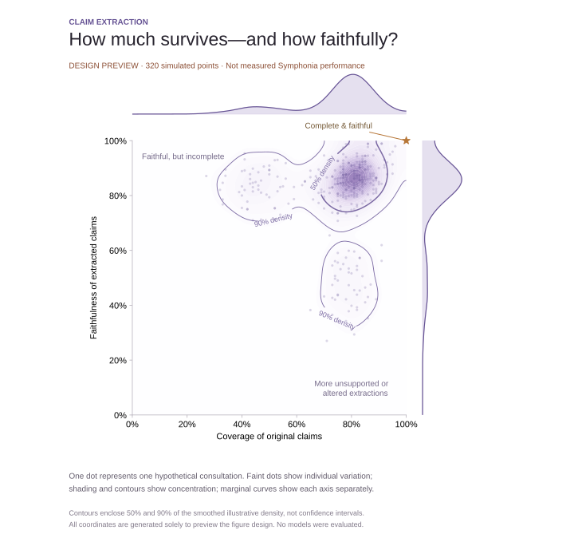
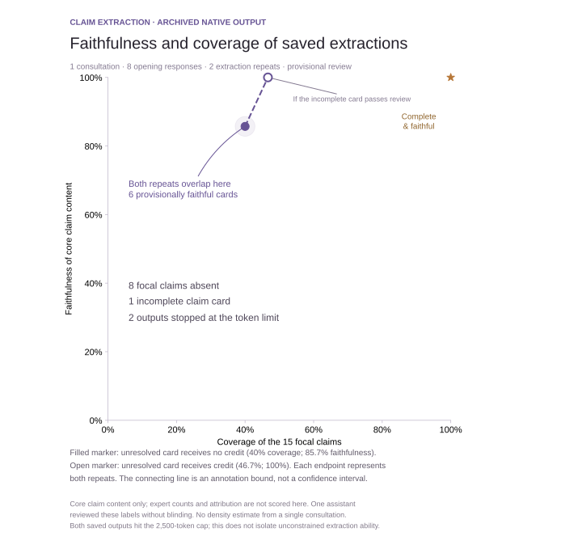

Development · evidence and evaluation
Does deliberation preserve the evidence?
Trace information loss, vote distortion and missing evidence through the three-round process. Explore the matched comparison, traceable failure cases and prospective study alongside every original figure.
No new OpenRouter spending. The integrity audit reanalyses previously paid model outputs. The original pilot and five protocol groups are separately labelled, assistant-authored demonstrations.
Loading saved platform records…
SIX QUESTIONS · ONE VISUAL LANGUAGE
A figure sequence for the paper
Follow the evidence from an expert’s paragraph to a reader’s decision. Each figure asks a different scientific question, using individual observations, soft distributions and precise comparisons.
Illustrative designs—not experimental results. Every plot in this collection uses simulated data. The shapes and apparent effects demonstrate the figure design; they are not findings or predictions. No OpenRouter credits were used.
ILLUSTRATIVE FIGURE
How to read it
The experiment behind it
Previous disagreement figure · archived line-chart design
All six figures · PDFFigures, data and generation codeSimulation record
Measured assistant pilot → · Original extraction-map page → · All earlier figures →
NEW EXPERIMENT · SAVED ASSISTANT OUTPUTS · UNBLINDED REVIEW
The shape of information loss
See where meaning survives and where it is lost. The map brings the observed scores into focus; each fine line shows a panel’s fully preserved, partially preserved and omitted claims. All scores come from the same saved pilot.
Assistant pilot, not a platform-model benchmark. I extracted these claims in this conversation from previously saved synthetic responses. No new OpenRouter calls were made. Reference IDs were visible and I also scored the outputs; the scores need independent review.
Compare with the preserved illustrative map → Earlier native extraction audit →


A real constraint on coverage
Each panel has nine or ten focal propositions. Allowing eight extracted claims makes the maximum coverage 88.9% or 80%. The 28 omissions are accounted for by that cap; this run cannot show how much an unconstrained extractor would lose.
Qualifications can disappear
My strict review flagged five lost population restrictions, three broadened outcomes, one omitted observation period and one sharpened stance. These ten judgments are contestable. They are shown separately in amber rather than counted as fully preserved. The reader below still lets you inspect the effect of accepting them.
Grouping is a separate question
Combining equivalent contributions can remove repetition without losing meaning. Combining different conditions or objections can erase meaning. Some saved extraction items already combine respondents. Without separate before/after grouping outputs, we cannot isolate grouping loss; the grey column therefore has no score or continuation.
Compare the illustrative and observed figures side by side

Both maps measure coverage and faithfulness. The observed map uses explicitly cropped axes to show its five distinct score pairs; the illustrative map uses the full 0–100% range. Their apparent distributions cannot be compared as competing model performance: one is simulated, and the other has a fixed eight-claim budget.
Count preserved meanings, not output cards. One grouped claim can faithfully represent several contributions. Fewer cards alone do not mean information loss. This pilot uses preassigned focal propositions; it does not yet provide an independent inventory of every argument, condition and reason.
What would the grouping experiment measure?
Annotate the original arguments, attached conditions, reasons and positions before inspecting the outputs. Match each original meaning through extraction and grouping. Merging true repetitions receives full credit; removing a consequential difference does not.
Report retention separately for shared arguments, minority objections, and conditional or uncertain positions. These categories require fresh annotation and are not currently available in this pilot. Multiple source contributions mapping to one grouped claim must not automatically be counted as omissions or as independent evidence.
Use matched consultations, saved outputs at both stages, fixed word budgets and independent blinded review. Keep partial preservation, omissions, invented assertions and changed attribution separate. The current ten partial labels remain provisional self-review.
Previous plot with scoring-sensitivity lines · archived PDF · Previous stage figure · archived PDF
Inspect every decision
Choose a panel, then open an extracted claim to inspect the judgment and its original source paragraphs. Partial labels are shown first. The input and output files preserve all cases.
Study design, scoring and limits
Participants P01–P12 in each scenario were paired consecutively without reuse. Original response text and inline claim IDs were retained. The extraction prompt allowed up to eight focal claims and 200 whitespace-delimited words per panel; all 24 outputs contain eight claims and 107–137 words. Outputs were authored before the operational scoring rubric and labels. This is an exploratory design, not a preregistration.
The 220 reference occurrences are the original generator's declared focal IDs, checked against the input during this self-review. They are not 220 independent propositions or exhaustive annotations of every incidental assertion. Repeated references across panels count within each panel. Two respondents' positions on the same proposition may share one extracted item; preserving disagreement matters.
Source paragraphs were generated in earlier paid GPT-4.1 runs. This experiment reused them without making new provider calls. No Symphonia extraction or synthesis endpoint was invoked. The page publishes saved results; it does not run models when opened.
We report descriptive counts without p-values or population confidence intervals: the 24 panels are nested in only four synthetic scenarios, the extractor saw reference IDs, and the same assistant generated and judged the extractions in one conversation. The relaxed view tests sensitivity to these labels, not their correctness. This does not establish accuracy on real expert consultations or publication-level validation.
48 original inputs192 saved extractionsAll judgments and scoresFrozen designReproduction bundle
FIGURE CONCEPT · ONE EXTRACTION PROCESS · ILLUSTRATIVE DATA
How much survives—and how faithfully?
Explore all six paper figure concepts →
A single view designed for hundreds of consultations. Read right for more original claims preserved, and up for fewer distorted or unsupported extractions. The top-right corner is the goal.
Design preview, not a result. These 320 points are simulated to show the visual treatment. They are not measured consultations, model runs or estimates of Symphonia’s performance. No OpenRouter credits were used.
New 24-panel assistant experiment → · View the real-output audit →


Dots retain the detail
Each dot will represent one scored consultation. Faint marks keep individual cases visible without overwhelming dense regions.
Contours reveal the pattern
Soft shading shows concentration. The two contours enclose 50% and 90% of the smoothed illustrative density. These are distribution contours, not uncertainty intervals.
Margins separate the trade-off
The top curve shows coverage alone; the right curve shows faithfulness alone. The central map shows whether they succeed or fail together.
How the real measurements would be defined
Coverage: unique reference claims faithfully represented in the extraction, divided by all reference claims. Altered meaning or lost consequential qualifications do not count as a faithful match.
Faithfulness: extracted atomic claims supported by the input without meaning-changing distortion, divided by all extracted atomic claims. Faithfulness concerns the original text, not whether an expert’s underlying belief is true.
Claims must be atomized and matched under a fixed rubric, preserving conditions and source spans. Deduplicate semantically repeated claims before scoring; keep duplicate rate separately. Resolve split/merged outputs explicitly. Reference annotations and matches need independent review. Empty extraction has zero coverage and undefined faithfulness; report it separately rather than assigning a perfect score. Consultations with no reference claims are reported separately as unscorable.
The preview uses compatible constructed counts and reflected Gaussian smoothing on bounded 0–100% axes, with bandwidth 4.5 percentage points. For measured data, report consultation counts, show sensitivity to smoothing, and retain failures at the boundaries. The eventual plot will use one point per consultation for the selected extraction process; repeated generations must be shown or aggregated under a stated rule, not counted as independent consultations.
Only the visual design is being previewed. Density shape, apparent clusters and apparent success rates have no empirical interpretation here.
OBSERVED ARCHIVED EXTRACTIONS · SOURCE-LINKED PROVISIONAL REVIEW
← Back to the extraction map design
Saved extraction outputs and source-text audit
The same coverage–faithfulness axes now show saved native Symphonia extraction outputs. There is one consultation with two repeat generations, so the plot shows the observations and annotation bounds without a fabricated density cloud.
Actual outputs; provisional scoring. Both outputs stop at the 2,500-token cap. One assistant reviewed the core claim content without blinding. This is an exploratory audit of delivered output—not a validated estimate of platform accuracy.
1 × 2one consultation
two extraction repeats
two extraction repeats
6 + 1provisionally faithful cards
one incomplete card per repeat
one incomplete card per repeat
8 / 15focal propositions absent
from each delivered output
from each delivered output

The filled marker gives the incomplete card no credit; the open marker gives it credit. Both repeats have the same counts and overlap. The line shows the effect of that unresolved annotation, not a statistical confidence interval. Core content is scored across the heading and its associated source excerpts; expert counts and attribution are excluded.


What the real record shows
The extraction emits seven claim headings, but the seventh card is cut off. Eight focal propositions—including the exact grade-band rates, cross-district evidence and policy/value claims—do not appear as delivered claim cards. Because both calls terminated at the token cap, these omissions cannot establish what an unconstrained extraction would have retained.
Six complete cards provisionally preserve their core claim and critical qualifications. This does not mean the entire cards are correct: generated expert-position lists and People counts require a separate audit. The uncertainty shown here covers the incomplete card only; it does not capture uncertainty in the assistant’s six positive labels.
Inspect the actual source and extraction
Select either repeat and any focal claim. Original input quotations appear beside the exact output card; omitted claims remain selectable.
Scoring definitions and limitations
Coverage: focal input propositions faithfully represented by core claim content, divided by 15 prespecified focal propositions verified present in the actual opening paragraphs. This is not an exhaustive recall score for every incidental assertion in the text.
Faithfulness: core extracted claim content supported by the input with critical qualifications preserved, divided by seven delivered claim headings. Headings are assessed together with their own associated quotations and opposing-view text; neutral propositions are not treated as endorsements. Attribution, People counts, status labels and generated stance lists are excluded. Faithfulness to an expressed belief is distinct from factual truth.
Six complete cards provisionally pass an unblinded assistant review. The incomplete seventh card is unresolved rather than automatically passed or failed. The plotted bounds are 6/15–7/15 and 6/7–7/7. Both repeats share input and are dependent. No confidence intervals, density contours or claims of independent validation are made.
This audit uses the two completed native extraction-call records from the v8 eight-person full-workflow Symphonia condition. The later benchmark adapter failed, but the native outputs and their inputs are saved. Both calls report finish reason length and 2,500 completion tokens. The old automatic alignment gate is not used to produce these labels. The reference associations and semantic judgements remain provisional until independently reviewed.
More independently scored consultations are needed to populate the distribution. Repeating these two outputs or smoothing one consultation would create a misleading picture of evidence quantity. No model calls or OpenRouter spending were made for this reanalysis.
Source paragraphs, outputs and reviewClaim-level source dataAnalysis and plotting codeReproduction notes
RESEARCH QUESTION · EXPLORATORY RESULTS · CONFIRMATORY DESIGN
Can we compress a deliberation without changing its evidence?
The strongest paper would establish a failure mechanism, test a practical fix, and show whether it changes decisions. We now have a matched archival comparison to support the first step—and a specific protocol for the remaining work.
MEASURED IN THE ARCHIVE
Errors recur; exact counts help in this case.
All six ordinary summaries contain at least one count error. Both summaries supplied with the exact reference table reproduce the counts correctly. The eight runs start from the same transcript.
HYPOTHESIS TO TEST
A traceable evidence ledger could prevent distortion.
Keep claim identity, actual votes, missing answers, conditions and source lineage explicit. Test whether constraining summaries to that record improves fidelity without losing useful context.
One scenario · one model · eight outputs · two generation repeats per method. This is retrospective evidence, not independent replication, a model leaderboard or a Nature-ready result.
Independent evidence inventoryStable extracted claimsRecorded ratingsAuditable feedbackBlinded decision test
What would support the full scientific claim?
Fidelity and compression
Compare ordinary and ledger-constrained summaries on fresh independent cases. Blind assessors score consequential omissions, changed qualifiers, vote errors and source distortion at each stage. Plot paired case-level effects across summary budgets.
Bias with evidence held constant
Swap prestige labels between identical contributions; separately vary order and verbosity. Plot within-case changes in evidence inclusion. Cross minority size with evidence quality so preserving a correct warning is distinguished from amplifying an unsupported claim.
Consequences for readers
Randomize blinded readers to full evidence, ordinary summaries or ledger-constrained summaries. Measure decision loss against a prespecified case-specific rule, comprehension and confidence. Use reader- and case-aware inference.
Evidence required before calling this publication-ready
Fresh scenarios, independent annotation, validated claim mapping, replicated methods, justified sample size and randomized decision data are still missing. Claims and repeat generations cannot substitute for independent cases. The current one-case archive cannot estimate between-case uncertainty.
The downloadable protocol defines endpoints, blinding, exclusions, failure reporting, sample-size planning, inference and the main-paper figure sequence. It is a prospective draft, not a registered protocol or a completed study.
Full study protocolAnnotation rubricFigure source dataTranscript, outputs and inventoryComputed comparisonsReproduce analysis
Methods and reproducibility
Eligibility was defined retrospectively as all completed v8 identical-transcript runs in the downloaded snapshot with 8 participants, a 500-word budget and one of four methods: direct, structured, staged or reference-fed. Exactly eight meet these criteria. Their original material is identical; the staged method transforms it internally and the exact-table control receives additional reference counts. Token use and information access are therefore not matched.
Counts are recomputed from the actual round-three ballots supplied to the models. Each 15-row audit was mapped to C1–C15 by an unblinded assistant review of its wording; this is a topical correspondence, not a judgement that every qualifier was preserved. Independent semantic validation is still needed. A count vector is incorrect if any of its three categories differs. The heatmap shows summed absolute count discrepancies. The threshold plot compares support ≥ k for every integer k from 1 to 8; no threshold is proposed as a validated decision rule.
The archive inventory and hashes make inclusion auditable. Scheduled outputs are not results; failed runs remain visible. The older v7 pipeline trace is not pooled with this comparison. No new model calls were made. To reproduce: download the evidence JSON and Python script, install numpy and matplotlib, then run python analyse.py --evidence evidence.json --out results.
The protocol follows the transparency principles in Nature’s submission guidance and Nature Portfolio reporting standards. Meeting reporting standards does not establish journal suitability.
Explore the earlier pipeline failure traces → · All nine original figures →
ARCHIVAL AUDIT · MEASURED COUNTS · ONE SYNTHETIC SCENARIO
Agreement can look intact while information changes.
Two saved engineering workflows let us ask a sharper question: does each summary preserve the claims and votes it actually received? These figures expose specific failures and recovery, rather than treating a plausible-looking summary as evidence of fidelity.
12 → 2claims with count errors
feedback → final, out of 15
feedback → final, out of 15
3 / 15reference claims admitted
by the adapter’s replay gate
by the adapter’s replay gate
32 / 56missing ballot slots
in the adapter workflow
in the adapter workflow
Two different workflows, one shared scenario, eight replayed participants. These denominators describe this case; they are not independent replications or population error estimates.
The study that would make a strong paper
The central hypothesis: compression and social feedback can alter the evidence behind a decision even when apparent agreement increases. The next experiment should test fidelity, directional bias and downstream consequences separately.
1. Where is information lost?
Use independently authored cases with a fixed evidence inventory. Compare original responses, extracted claims, feedback and final summaries. Plot claim and qualifier retention by stage and summary budget, with paired scenario-level uncertainty.
2. Whose evidence is favoured?
Hold evidence constant; randomly swap prestige labels, order and verbosity. Vary minority size separately from evidence quality. Plot within-case changes in inclusion and reported support. A directional difference would indicate bias; the current archive does not establish it.
3. Does distortion change a decision?
Randomly give blinded readers the full evidence or a summary. Measure factual accuracy and decision loss using a prespecified rule. Plot paired decision changes against information lost, retaining correct minority evidence and unsupported minority claims as separate conditions.
Methods, attribution and safeguards against misleading results
This is an exploratory reanalysis of two completed v7 full-workflow engineering runs (structured baseline and Symphonia benchmark adapter), on pilot-000, policy A, panel size 8, 500-word budget. They were selected because both completed and provide full intermediate records. The later v8 failures are not pooled into this comparison. This is not a systematic estimate across all paid runs.
Recorded stance counts are reconstructed from the saved round-two or round-three received ballots. Repeated display claims mapped to the same reference are deduplicated by participant and reference ID; conflicting duplicates fail the analysis. Count vectors use support, oppose and insufficient evidence. Missing values are never counted as uncertainty. Source claim IDs in audit text link reported counts to their actual input. No model judges are used to score numerical fidelity.
Claim coverage counts reference IDs admitted by the existing alignment gate. It is not a fresh independent semantic assessment. The gate may itself be wrong: a saved judgement rejects the high-school/elementary comparison while misdescribing the reference. Adapter-added “None” text is also present. Consequently, losses cannot all be attributed to the summarising model, and the benchmark adapter must not be equated with the live consultation UI.
The missingness case interpretation is an unblinded assistant review of exact saved text. There are no confidence intervals, p-values, causal feedback-effect claims or publication-readiness claims. A confirmatory study needs frozen endpoints, independent scenarios, blinded annotation, randomized paired controls and a sample size justified by pilot variability. Authored demonstrations elsewhere on this site are not confirmatory data.
Presentation follows the emphasis on exact denominators and reproducibility in Nature’s submission guidance. Figure quality cannot substitute for independent evidence.
Source data · CSVComputed audit · JSONFull saved evidence · JSONReproduce analysis · PythonReproduction instructions
Where did the claims come from?
Feedback available before this round
Constructed evidence and private packets
New: information loss and distortion audit →
Original pilot figures
The four original figures remain here in full. The five additional protocol figure groups follow below.
Original rating data (CSV) · Saved platform records (JSON) · Original metrics (JSON)
The five protocol figure groups
Loading self-evaluation records…
These are prepared-output checks in one conversation, not separate blinded model runs. Perfect count agreement is expected because counts are computed. Four-claim scenarios fit the shortest summary limit. Larger panels repeat the original records. No p-values or population confidence intervals are claimed.
Five-figure source data (CSV) · Claim-level data (CSV) · Complete test records (JSON)
Inspect the conditions behind each point
Inputs and outputs are saved together. The author’s reviews are separate from calculated counts. Identical text can be reused across equivalent inputs; a condition row does not imply a separate model invocation.
Scope of the self-evaluation
87 prepared condition records across three small scenarios: 15 summary-budget/panel-size conditions, 9 stage records, 24 input-change checks, 12 information-deletion controls and 27 minority-decision records. They are not 87 independent model experiments. The stage audit is unblinded and self-coded. Count reporting is deterministic.
The panel-size test tiles eight existing records to create 32 or 64 inputs. The minority tests are three framings of the same explicit loss rule; the reader knows that rule. Probability values were directly authored as a supplement, not elicited from independent participants. Model-family replication and production-component ablations were not performed: the component figure instead shows explicit input deletion.
Frozen pilot design · Coverage and provenance · Probability supplement
What ran in the actual platform?
The normal platform creation, submission, round transition, feedback publication and response-reading paths. Authored claims and summaries were saved through existing APIs. The platform’s AI extraction and synthesis were not invoked.
8 authored openings4 authored claims8 first ratingsTwo feedback conditions8 reconsiderations per arm
What the figures can establish
They describe the authored trajectories and verify that stored responses, identical round-two/three questions, feedback exposure and count summaries are consistent. They do not measure an independently sampled participant’s response to feedback.
Scoring
Each scenario has two decidable factual propositions, one unresolved proposition and one policy preference. Factual correctness counts Agree on the true proposition and Disagree on the false proposition. Unable to judge stays in the denominator and is reported separately. The unresolved proposition is assessed for retention of uncertainty, not factual accuracy. Policy preferences have no truth score.
Publication requirements
Vector PDF/SVG, 600 dpi PNG, exact denominators, complete trajectories and source data are provided. These are presentation assets, not publication-level evidence. A confirmatory study would need independently generated or human participants, blinded extraction/summary assessment, prespecified outcomes, adequate independent scenarios and a justified analysis. No success claim follows from these authored examples.
Reproducibility
Authored fixture and private evidence · Integrity checks · Methods and limitations
The earlier paid benchmark is preserved separately. Its incomplete results are not pooled with this pilot.